Gold in every kind of deposit
Almost every deposit type you’ve met carries some gold: supergene zones, VHMS, magmatic Ni-Cu, sedimentary Mn-Fe and banded iron formation, porphyry Cu-Au-Mo, IOCG, uranium and REE deposits. Often the gold is what makes the deposit pay, especially early in its life, and a deposit can shift from “copper mine” to “gold mine” with prices. The question is whether there’s enough of it. slide 2 lecture recording, 12 Oct
Gold-only deposits fall into three families: magmatic-hydrothermal (porphyry-related and epithermal, like Kidston and Lihir), metamorphic (orogenic and intrusion-related, like the Yilgarn, Victoria and Carlin) and sedimentary (placers and paleoplacers, perhaps the Witwatersrand). slide 3
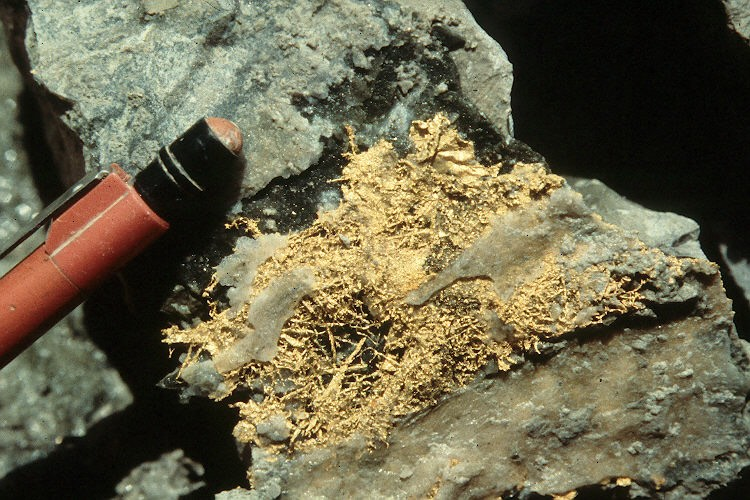
This is gold wire in quartz. What shape are the gold “wires” really built from, and what does the pale colour suggest?
Show what I see
- Fine, branching, wire-like gold on a quartz vein: crystalline gold, typical of epithermal systems.
- A pale, slightly greenish yellow rather than deep yellow.
So the wires are actually elongated, stacked cubes of gold. The colour is a rough guide to composition: pale gold is high in silver, deep yellow gold is purer. Don’t expect to see this in a real ore: most gold is invisible. lecture recording, 12 Oct
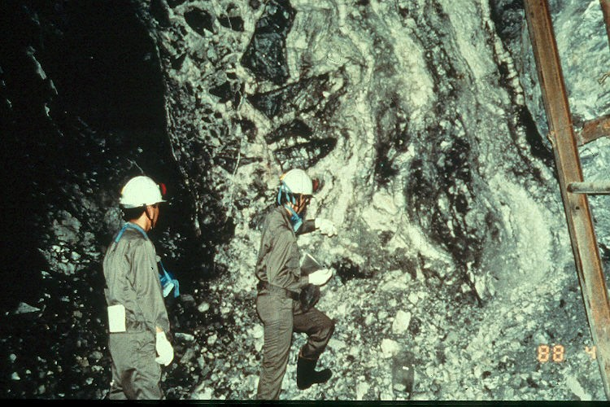
Production, reserves and history
All the gold ever mined, almost 200 000 tonnes, would make a cube about 22 m on a side. Gold has been prized for at least 7000 years, first from supergene and river deposits. From 1850 the rushes in California, eastern Australia and South Africa drove mass migration; Chinese miners in the Australian and Californian goldfields were the best at recovering fine “flour” gold. Since about 1990, technology has made low-grade and invisible gold mineable. slides 4 and 10 lecture recording, 12 Oct
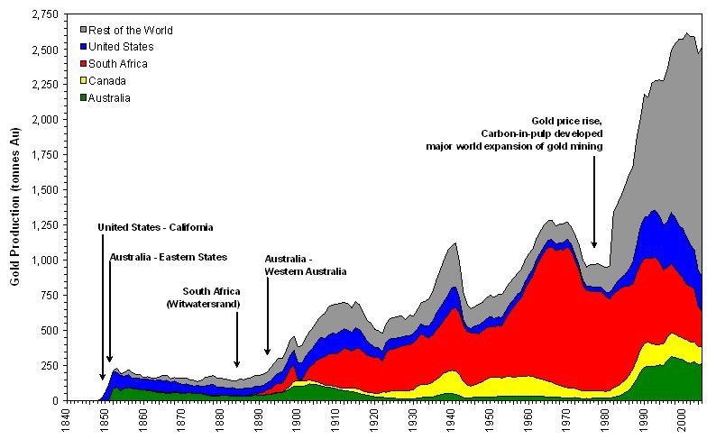
Who mines it, who holds it
Tonnes, USGS figures from slides 6 and 7.
Grades have fallen by more than an order of magnitude: early Australian goldfields ran above 50 g/t, and today mines work down to about 0.5 g/t. Jewellery is still the biggest use (43%), then bars and coins (29%), official sector purchases (12%), electronics (7%), ETFs (6%), other industry (2%) and dentistry (1%, about 40 t a year). slide 10 lecture recording, 12 Oct
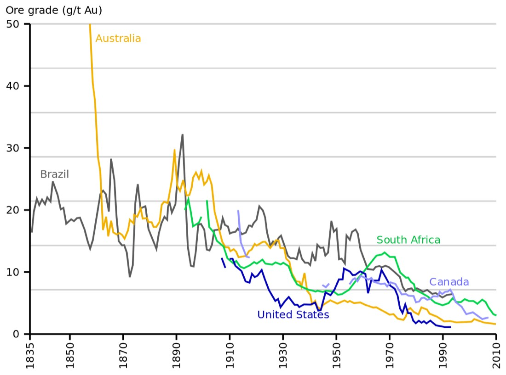
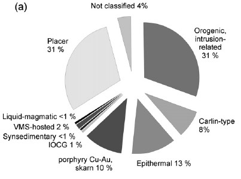
By deposit type, paleoplacer (mainly the Witwatersrand) and orogenic gold have each supplied about 31% of all production, epithermal 13%, porphyry and skarn 10%, Carlin-type 8% (now often grouped with orogenic), VMS about 2% and IOCG about 1% (more since Olympic Dam). In time, gold clusters in the Mesoarchean (the Witwatersrand alone) and the Cenozoic (porphyry and epithermal), with very little in the Mesoproterozoic. slide 11 (Frimmel, 2008) lecture recording, 12 Oct
Gold economics
Gold is priced per troy ounce, and one tonne holds 32 150.7 ounces (so an ounce is about 31.1 g; the slide rounds it to about 33 g). At US$2400 an ounce in 2024, a tonne was worth about US$77 million; at about US$4000 in 2025, a million ounces is worth US$4 billion. Australia produced 310 t in 2023, about 9.97 million ounces: roughly A$31 billion at 2023 prices and A$61 billion at 2025 prices. slides 8 and 9
Is it a mine?
Contained ounces = tonnes × grade ÷ 31.1 g. Values are gross metal value in the ground, before any costs; A$ at US$0.65 as on slide 9.
That’s why companies chase size. A deposit of a million ounces is worth billions in the ground, yet most large companies would pass on it: they want 10 million ounces or more, enough tonnage to justify the infrastructure and run for decades. A small, high-grade 50 000 oz orogenic deposit may simply be ignored. lecture recording, 12 Oct
Gold in ordinary rocks
Unmineralised igneous, sedimentary and metamorphic rocks hold only 0.05 to 20 ppb gold. Ore needs about 0.5 g/t in an open cut and 6 to 8 g/t underground. Since 1 g/t is 1000 ppb, even a low-grade open-cut ore is gold concentrated tens to thousands of times over background. Something has to extract it, carry it and dump it in one place. slide 12
- Igneous rocks: gold follows sulphur. Sulphur-undersaturated magmas keep more gold. Mid-ocean ridge basalts are more reduced, saturate in sulphide early and so hold less gold than ocean-island and arc basalts.
- Sedimentary rocks: gold rises with diagenetic sulphide and organic matter, so reduced sediments carry more.
- Metamorphic rocks: gold falls with metamorphic grade; amphibolite-facies rocks hold 50 to 80% less than their protoliths. The gold has been driven out by metamorphic fluid, which is exactly what orogenic deposits collect (Lecture 13).
slide 12; lecture recording, 12 Oct
Fluids in the crust
Five kinds of water move through the crust, and they mix. slide 17
| Fluid | Origin | Character |
|---|---|---|
| Magmatic | From the mantle, or any water taken into a magma (such as subducted, seawater-altered crust) | Hottest and most saline |
| Seawater | 70% of the surface, 98% of free water | Well mixed, 3.5 wt% dissolved salts |
| Meteoric | The hydrological cycle: rain, groundwater, lakes, ice | Dilute, oxygenated |
| Connate | Seawater or meteoric water trapped in sediment pores, modified by burial (75% expelled by 300 m) | Can be very saline |
| Metamorphic | Dehydration and decarbonation of minerals above about 200 °C | Low salinity, with CO₂, CH₄ and sulphur species |
Temperature changes everything. Cold seawater and rain are depleted in metals, but seawater heated to 100 to 300 °C in a black smoker, or meteoric water heated to 300 °C in a geothermal field, is enriched. Geothermal water at 300 °C carries 780 ppm dissolved silica against 1.2 ppm in rain. slide 18 (Krauskopf and Bird, 1995; Scott, 1997)
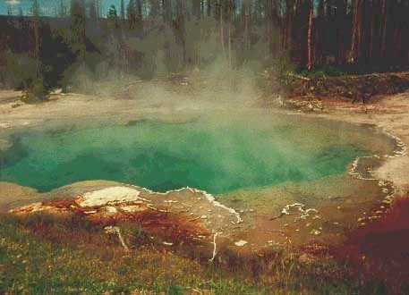
What is this pool the surface expression of, and what might the orange crust around it be carrying?
Show what I see
- A steaming, clear turquoise pool: hot, silica-rich water.
- Bright orange to red-brown crusts on the rim.
So this is the top of an active epithermal (geothermal) system. The orange is arsenic and antimony sulphide precipitate, and in some New Zealand pools these crusts carry hundreds of grams per tonne of gold. The Broadlands geothermal field precipitates kilograms of gold a year inside its pipes. slide 16 lecture recording, 12 Oct
Which fluid?0 / 5
Carrying gold
Gold dissolves by forming complexes. Under oxidising, acid conditions, and at higher temperatures, it travels as a . Under near-neutral, reducing conditions, and at lower temperatures, it travels as a . Organic complexes may matter too, but they’re poorly understood. slide 13 lecture recording, 12 Oct
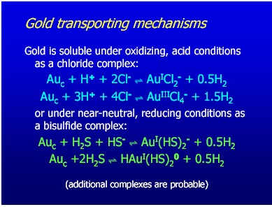
The key difference from base metals: gold stays fairly soluble at every temperature, switching from bisulphide at low temperature to chloride at high temperature, whereas zinc and copper need high temperature (above about 250 °C). Gold also dissolves in both acid and alkaline fluid, while Cu and Zn don’t dissolve in alkaline fluid. That’s why gold deposits form from the epithermal to the deep mesothermal range, and why gold turns up in so many settings. In high-sulphidation epithermal systems gold travels as chloride at low pH; in low-sulphidation ones as bisulphide at higher pH (Lecture 14). slide 14 slide notes lecture recording, 12 Oct
How does the gold travel?
Schematic, after the trends on slide 14 and the slide notes; bar lengths are relative, not real solubilities.
Dropping gold
Gold precipitates when its complex becomes unstable, and that happens when the fluid changes. The main ways: boiling (liquid to vapour as pressure drops near the surface) or, deeper down, effervescence, where an H₂O-CO₂ fluid unmixes; mixing with oxygenated groundwater, bicarbonate water or low-pH water; a pressure drop; reaction with wall rock, which neutralises or oxidises the fluid; and rapid cooling. Pressure on its own matters little, except through boiling and effervescence. slides 22 and 23 lecture recording, 12 Oct
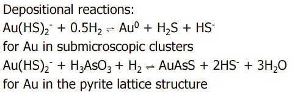
Mixing is a big one in epithermal systems. Gold-bearing fluid rising from depth meets oxygenated meteoric water coming down from the surface; the change in oxygen fugacity destabilises the complex. Manganese carbonate is a vector here, because the manganese comes down with the meteoric water. In oxidised systems gold goes with hematite and pyrite, in reduced systems with magnetite. lecture recording, 12 Oct
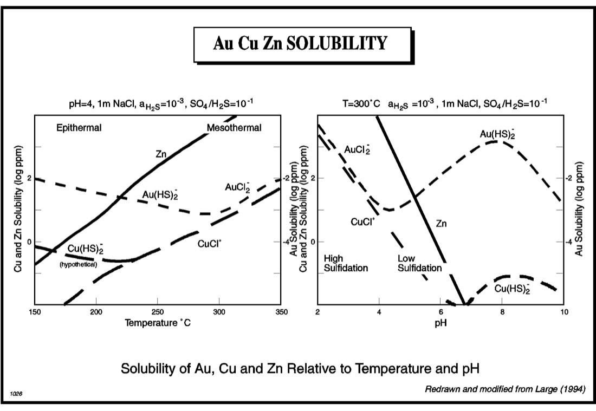
What dropped the gold?0 / 5
- Transport: oxidising, acid, hotter → AuCl₂⁻; near-neutral, reducing, cooler → Au(HS)₂⁻.
- Deposition: boiling or effervescence, fluid mixing, pressure drop, wall-rock reaction, rapid cooling.
- Gold is soluble across all temperatures; Cu and Zn need high temperature.
Settings, depths and alteration
What drives fluid through the crust? Gravity (hydraulic head, as in sandstone uranium), orogeny and compression (MVT), heat (VHMS), and fault movement. Along active faults, fluid moves by : each earthquake opens the fault and fluid surges up it; then it seals, and pressure builds again, from hydrostatic toward lithostatic. That’s the pump at the top of the page (Sibson and others, 1988). Repeated, it builds en echelon vein arrays, typical of orogenic gold. In shallow epithermal systems the pressure swings are gentler. slides 19 and 20 lecture recording, 12 Oct
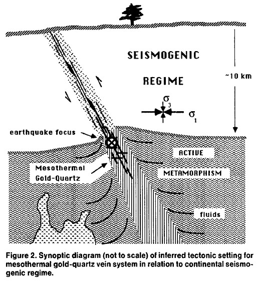
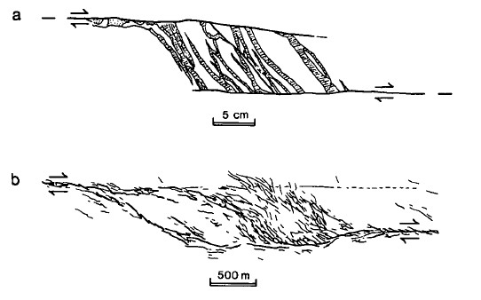
Gold deposits match the stages of an accretionary orogen. In the constructional stage (arcs) you get porphyry Cu-Au, epithermal and skarn; in the orogenic stage, VMS, orogenic gold and placers; in the late to post-orogenic stage, Carlin-type deposits and some porphyries. Depth sorts them too: epithermal from the surface to about 2 km, porphyry a few kilometres down (to about 5 km), orogenic gold deeper, grading from epizonal Hg-Sb through mesozonal Au-As-Te to hypozonal Au-As-W toward 20 km. slides 25 and 26 (Bierlein et al., 2009; Groves et al., 1998)
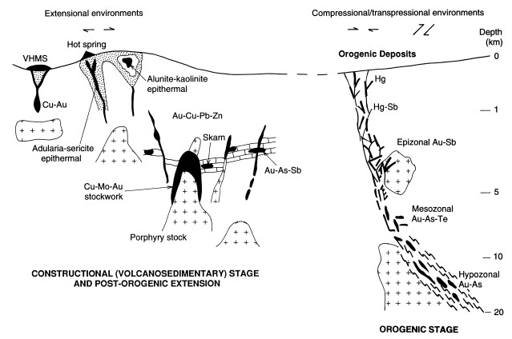
| Style | Setting | T (°C) | Depth | Alteration |
|---|---|---|---|---|
| Orogenic | Compressional, deformed metamorphic terrains | 200 to 700 | 2 to 20 km | Carbonation, sericitisation, sulphidation |
| Epithermal | Arcs and many others | 100 to 300 | surface to 2 km | Adularia-sericite-quartz (low sulphidation); quartz-alunite-kaolinite (high sulphidation) |
| Alkalic epithermal | Post-subduction back arc extension | <300 | very shallow | Carbonate, K metasomatism; telluride-rich |
| Carlin-type | Back arc extension, post-orogenic | 200 to 300 | 2 to 3 km | Intense silicification, argillic; very fine gold |
| Porphyry | Arcs | high | deeper | Biotite, K-feldspar; saline fluids; Ag-poor |
slide 27; lecture recording, 12 Oct
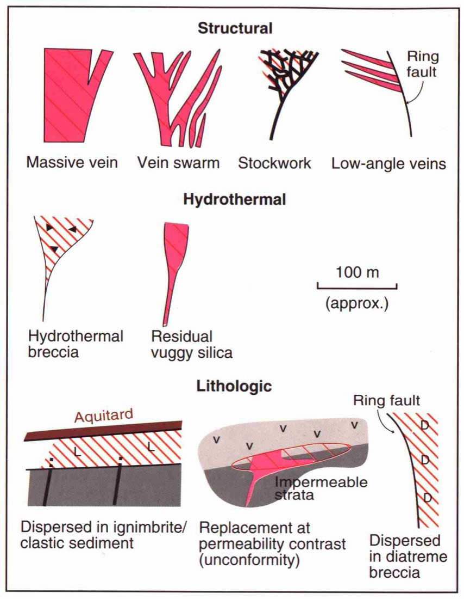
Alteration lets you read temperature and pH. Alunite always means low pH (and with andalusite, high temperature); adularia means near-neutral pH; sericite forms at higher temperature than clays. slide 24 (Corbett and Leach)
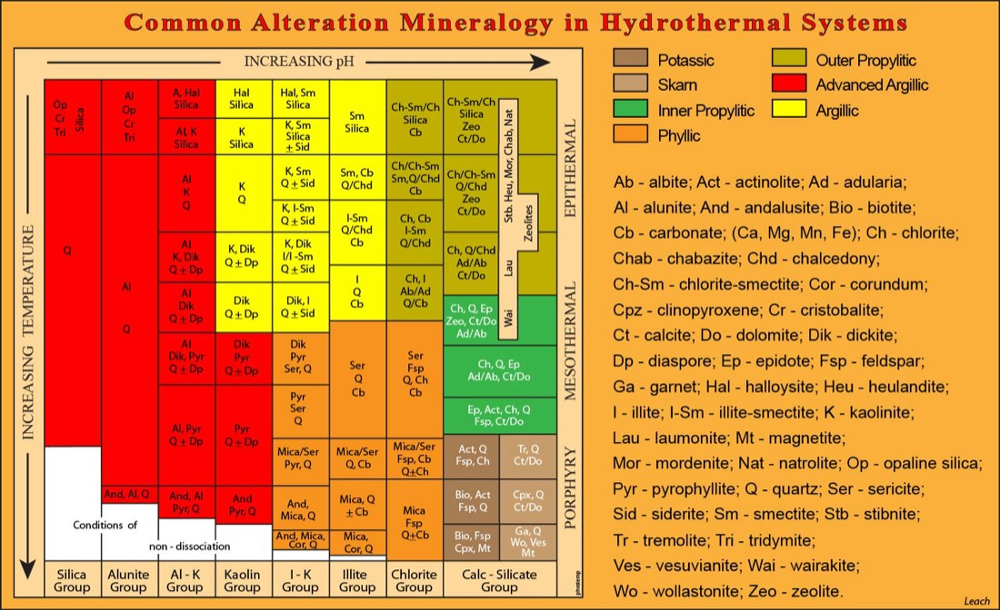
Place the deposit0 / 5
Gold minerals and the Hera mine
Gold is almost always alloyed with silver, in a complete solid solution. “Electrum” is a mining term for Au75Ag25 to Au25Ag75; the International Mineralogical Association’s 50:50 rule calls anything over 50% Au gold and anything under 50% silver. Gold also alloys with Cu (auricupride Cu₃Au, tetra-auricupride AuCu), Sb (aurostibite AuSb₂, fairly common in orogenic deposits) and Bi (maldonite Au₂Bi, named after Maldon in Victoria). Many orogenic and epithermal deposits carry gold : calaverite AuTe₂, petzite Ag₃AuTe₂, sylvanite AuAgTe₄, krennerite and rarer ones, as at Kalgoorlie, Vatukoula and Cripple Creek. slides 30 to 32 lecture recording, 12 Oct
Composition matters for money. Gold is about US$4000 an ounce, silver about US$44, so a grain that is mostly silver is worth a fraction of one that is nearly pure gold. Deposits often have several generations of gold, so the composition can vary a lot. slide 33
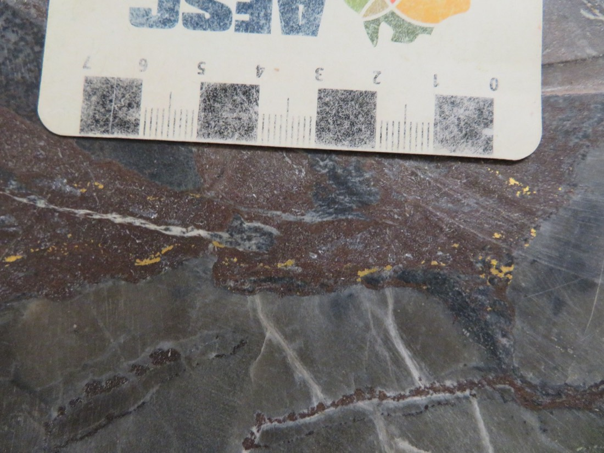
Look along the dark brown band. What are the yellow specks, and how big are they?
Show what I see
- Bright, metallic, butter-yellow specks a few millimetres long, concentrated along a dark brown sulphide-rich band, with thin pale veinlets cutting the grey host.
So that’s visible gold in polymetallic ore from the Hera mine, central NSW. Gold is the only common mineral that is this yellow, very soft and doesn’t tarnish; pyrite and chalcopyrite are paler or more brassy and much harder. Specks like these are rare in most ores, where the gold is invisible. slide 36
Hera is a Devonian, turbidite-hosted Au-Zn-Pb-Ag deposit near Nymagee in central NSW, mined underground from a decline; mining only began 220 m below the surface. Its gold grows with sphalerite and galena, sometimes with cuspate-lobate grain shapes (crystallised alongside the sulphides), and is rimmed by Ag-sulphosalts or by aurostibite where antimony arrived in the fluid after the gold. Microprobe analyses range from about 27% to almost 96% Au. At current prices that’s the difference between under US$1000 and over US$4000 per ounce of metal recovered. slides 33 to 39 (Graham et al., 2022) lecture recording, 12 Oct
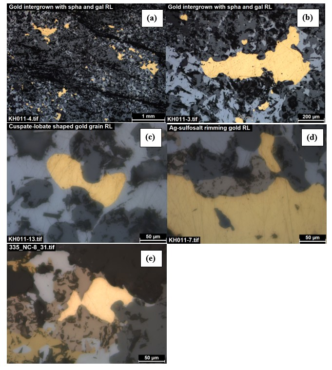
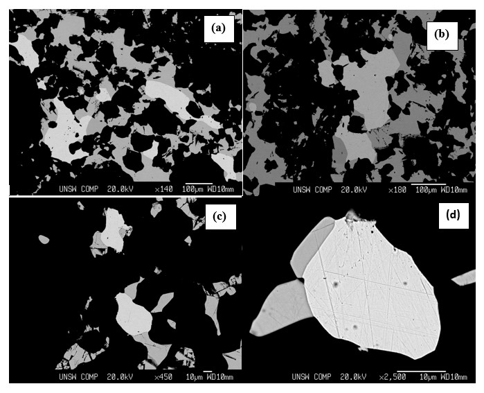
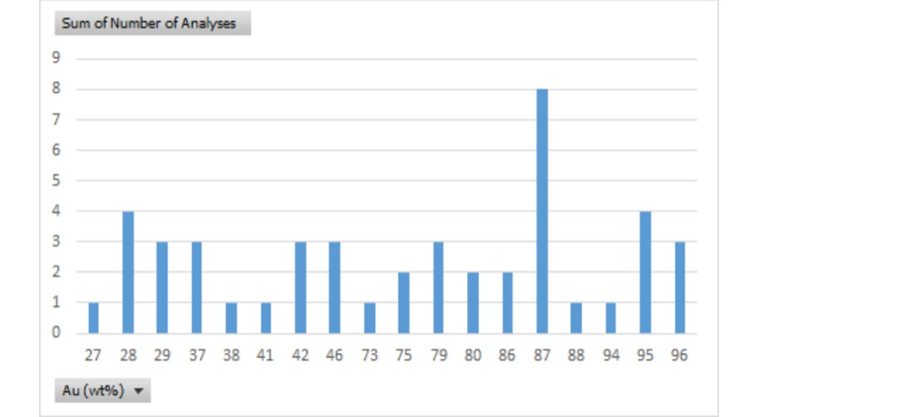
How much is this grain worth?
Uses the slide 33 prices (Au US$4000, Ag US$44 an ounce) and treats the rest of the grain as silver. The 27 to 96% range is the Hera microprobe range on slide 39.
- Gold in reflected light: bright yellow, the highest reflectance in the field, soft (scratched, smeared polish) and isotropic. Paler, whiter gold is richer in silver.
- Don’t confuse it with chalcopyrite (darker brassy yellow, harder) or pyrite (pale creamy yellow, hard, often euhedral).
- Watch for tellurides and aurostibite rims next to gold.
Witwatersrand: the paleoplacer giant
Placers are gold concentrated by rivers and waves; are old placers turned to rock, tilted and buried, so mining them only pays if they’re very rich. The Witwatersrand Basin, just south of Johannesburg, is the great exception: Archean to Mesoproterozoic (3100 to 2200 Ma) gold- and uranium-rich conglomerates, the largest concentration of gold in the world. Smaller examples are at Blind River and Elliot Lake in Canada, Jacobina in Brazil, Tarkwa in Ghana and in the Pilbara. slide 40 lecture recording, 12 Oct
Since its discovery in 1886 it has produced about 45 000 t of gold, roughly 40% of all gold ever mined, at an average 10 g/t until 1983. South African output peaked at 1000 t in 1970 and has fallen since, because the remaining reefs are very deep and expensive to reach, though the reserves are still large. The gold-bearing reefs are traceable for tens of kilometres. slide 44 lecture recording, 12 Oct
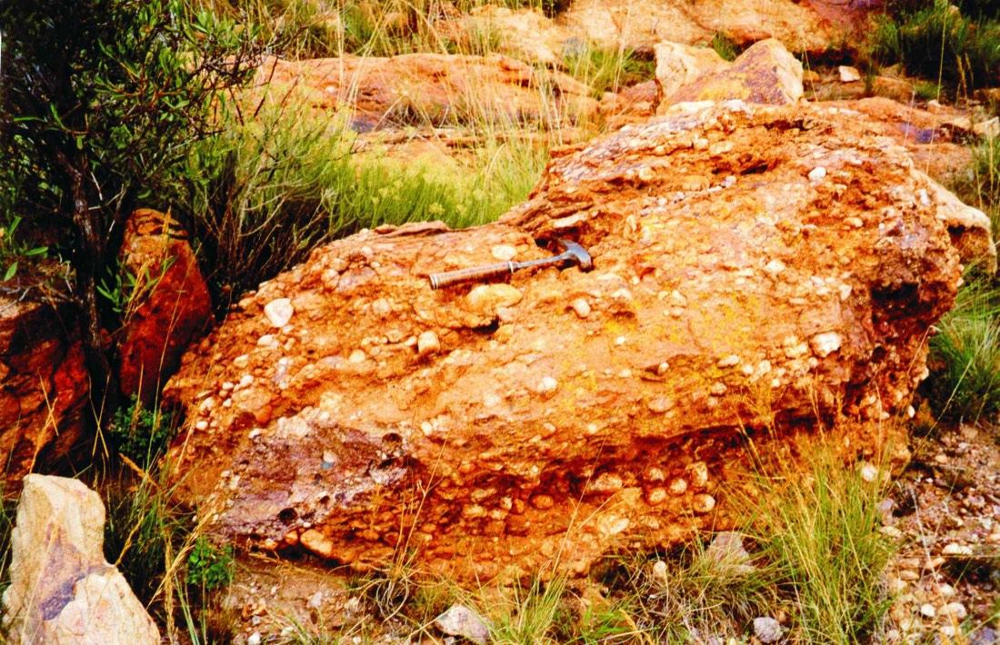
Describe the clasts: shape, sorting, composition. What kind of rock is this, and what deposited it?
Show what I see
- Well-rounded pebbles, fairly similar in size, mostly pale vein quartz, closely packed in a finer, iron-stained matrix.
- Faint layering, suggesting bedding.
So it’s a quartz-pebble conglomerate: rounded clasts mean long river transport. The pebbles are almost all one kind (monomictic: vein quartz, chert, pyrite), and that’s odd, because the basin sits on Archean granite and greenstone, yet no granite or greenstone clasts appear. Gold and uraninite sit in the matrix. slides 41 to 45
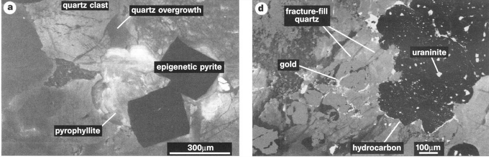
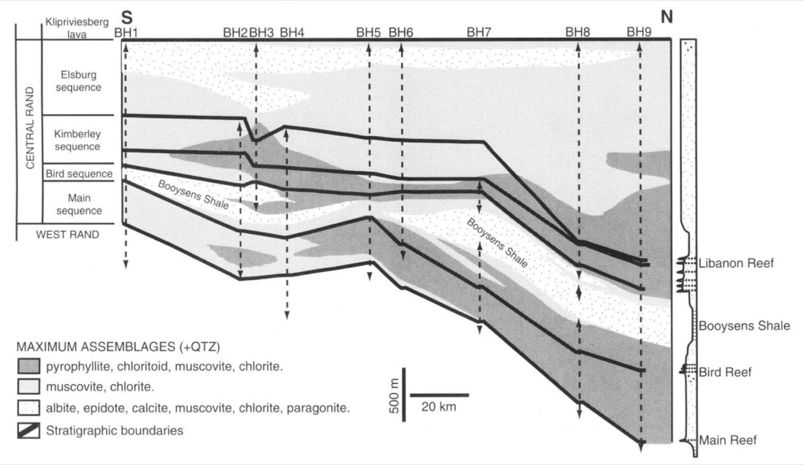
How did the gold get there? Two camps: a paleoplacer, gold eroded from Archean greenstone belts and washed into a lake or shallow sea at the basin margin (Frimmel), or hydrothermal, gold brought in later by fluids (Phillips). The evidence fits a hydrothermally modified paleoplacer: detrital gold and uraninite, later recrystallised and overgrown in alteration (pyrophyllite, chloritoid, muscovite, chlorite, pyrite) without much gold being added. Uraninite survives only in an oxygen-poor atmosphere, a clue to the Archean world. slides 41, 42, 44 and 45 slide notes lecture recording, 12 Oct
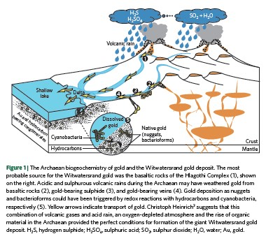
Placer or hydrothermal?0 / 4
Old gold, new gold
Traditional gold mining hunted visible gold and nuggets at high grade: placers in gravels and soils, then selective mining of orogenic reefs and veins at shallow depth. Placer gold at Castlemaine’s “Potato Patch” came out in lumps the size of potatoes. Low-grade material was left behind, which is why modern companies return to old goldfields to reprocess and re-explore them. slide 29 lecture recording, 12 Oct
Modern mining goes after fine to microscopic gold at low grade by bulk-tonnage methods: epithermal and Carlin-type deposits, which nobody recognised until a USGS geologist showed in the late 1970s that the fine-grained sediments of the Carlin trend held gold. Today every deposit style is mined in bulk, down to very low grades. slide 29 slide notes
- Background 0.05 to 20 ppb; ore ≥0.5 g/t open cut, 6 to 8 g/t underground.
- Five crustal fluids: magmatic, seawater, meteoric, connate, metamorphic.
- Wits: ~45 000 t, ~40% of all gold; conglomerate with gold and uraninite; probably a hydrothermally modified paleoplacer.
- 1 t = 32 150.7 oz; electrum = mining term; IMA 50:50 rule.
Self-test
Answer out loud or on paper before you open each one. Claim the ounces if you got it.
Glossary and flashcards
Terms this lecture assumes or defines quickly. The dotted words in the text open them in place.
Flashcards
Where this goes next
Lecture 13 takes the fault-valve pump and the metamorphic fluid from this lecture into the orogenic gold deposits of the Yilgarn and Victoria. Lecture 14 does the same for boiling and mixing in epithermal deposits.